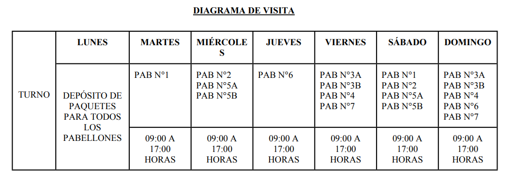
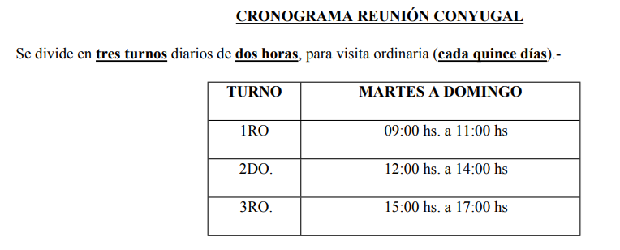
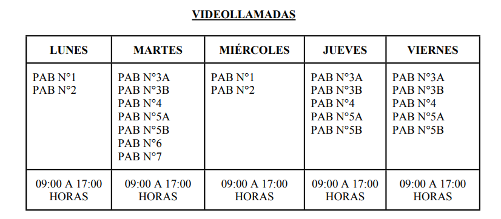

Instituto Penal Federal Nº 35 "Colonia Pinto"
Este protocolo se aplica obligatoriamente para toda persona que desee ingresar o egresar del Instituto Penal Federal Colonia Pinto - Unidad N° 35, incluyendo visitas, profesionales y funcionarios, con el objetivo de garantizar la seguridad y el control.
A continuación se informan los requisitos y la documentación que deben presentar los visitantes, para efectuar la visita de una Persona Privada de la Libertad (P.P.L)
Horario general de visitas: 09:00 a 17:00 hs, organizado por pabellones y modalidades. El depósito de paquetes se realiza los días lunes para todos los pabellones.



Las imágenes representan el circuito completo de visitas, desde el ingreso del visitante, control, permanencia en el sector asignado y egreso del establecimiento.
| Día | Pabellones habilitados | Tipo de visita | Turnos |
|---|---|---|---|
| Lunes | Todos los pabellones | Depósito de paquetes | 09:00 a 17:00 |
| Martes | Pabellón N° 1 | Visita ordinaria / reunión conyugal | 09:00–12:00 / 12:00–15:00 / 15:00–17:00 |
| Miércoles | Pabellones N° 2 – 5A – 5B | Visita ordinaria / reunión conyugal | 09:00–12:00 / 12:00–15:00 / 15:00–17:00 |
| Jueves | Pabellón N° 6 | Visita ordinaria / reunión conyugal | 09:00–12:00 / 12:00–15:00 / 15:00–17:00 |
| Viernes | Pabellones N° 3A – 3B – 4 – 7 | Visita ordinaria / reunión conyugal | 09:00–12:00 / 12:00–15:00 / 15:00–17:00 |
| Sábado | Pabellones N° 1 – 2 – 5A – 5B | Visita ordinaria | 09:00–12:00 / 12:00–15:00 / 15:00–17:00 |
| Domingo | Pabellones N° 3A – 3B – 4 – 6 – 7 | Visita ordinaria | 09:00–12:00 / 12:00–15:00 / 15:00–17:00 |
Dirigidas a familiares directos y allegados autorizados, según cronograma y requisitos. Duración: 3 horas por turno.
Otorgadas por motivos de distancia, salud o trabajo. Modalidades y documentación según cada caso (certificado médico, comprobante laboral, etc.).
Reuniones para fortalecer vínculos (cumpleaños, fechas especiales), con solicitud previa y evaluación del Servicio Social. Duración: 2 horas (frecuencia: 1 vez por mes según reglamento).
Se otorgan a P.P.L con sanciones, altos niveles de riesgo o circunstancias especiales. Suelen realizarse en locutorio, sin contacto físico y con familiares directos previamente autorizados. Estas visitas se regulan según la Resolución del Ministerio de Seguridad N° 153/2025, que establece el régimen vigente para personas privadas de la libertad incluidas en el Sistema de Alto Riesgo del Servicio Penitenciario Federal, definiendo la frecuencia, duración y requisitos específicos para el acceso de familiares.
Abogados, curadores y profesionales de la salud con documentación y confidencialidad garantizada. Requisitos: matrícula y credencial vigente.
Programadas según normativa: visitas espirituales semanales, visitas diplomáticas con credencial, y visitas de estudio con solicitud previa (presentación 30 días antes para grupos docentes).
Lista representativa (no exhaustiva): armas de fuego y blancas, municiones, estupefacientes, alcohol, líquidos inflamables, herramientas, dispositivos electrónicos con comunicación (celulares, cámaras, pendrives), dinero en efectivo, joyas, objetos de vidrio o metal, entre otros.
Aquellos esenciales para el P.P.L y autorizados por el Comando de Seguridad en casos puntuales (por ejemplo, prendas de abrigo de uso justificado, medicamentos con receta, elementos de higiene en condiciones específicas).
Algunos equipos (electrodomésticos, ciertos reproductores, libros electrónicos, etc.) pueden autorizarse bajo condiciones y según evaluación de riesgo y categoría del P.P.L.